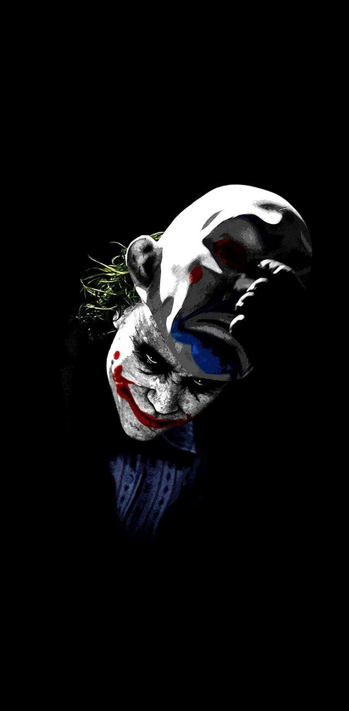

About the Dark Knight
The man so grieved by the loss of his parents that he becomes a vigilante to make sure no other boy suffers the same fate.

The Classic Batman
Batman and his two faces
- Real name Bruce Wayne
- Is multi-billionare
- Has The Batcave as his lair
Allies
Batman works alone but occasionaly he can rely on these people
- Robin his adopted son
- Commisioner Gordon
- The Justice League
- Alfred The butt-ler
Nemesis: The Joker
The ultimate antagonist to Batman, embodying the spirit of chaos that completely contrasts to everything Batman stands for.
